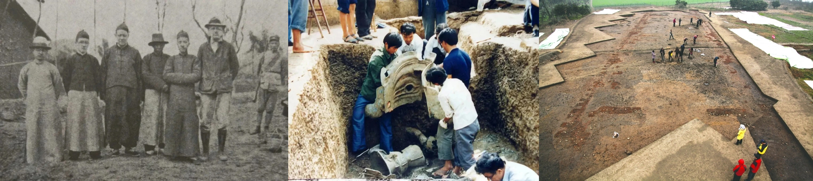

Our History
The Sanxingdui Museum was established in 1997 to house and showcase the remarkable archaeological finds from the Sanxingdui site. The discovery of this site in 1929 and subsequent excavations in the 1980s revealed a previously unknown Bronze Age culture that flourished between 3000 and 5000 years ago in what is now Sichuan province, China.For more details on the history, see our Timeline page.
Our Mission
At Sanxingdui Museum, our mission is to preserve, study, and present the extraordinary cultural heritage of the ancient Shu civilization. We strive to:
- Provide a world-class facility for the conservation and display of Sanxingdui artifacts
- Promote research and understanding of the Sanxingdui culture and its significance in Chinese history
- Offer engaging educational programs for visitors of all ages
- Foster international cooperation in archaeological research and cultural exchange
Our Collection

Our museum houses thousands of artifacts unearthed from the Sanxingdui archaeological site, including:
- Monumental bronze sculptures
- Intricately crafted gold masks
- Jade objects and tools
- Pottery and ceramic items
- The iconic Bronze Tree of Life
These artifacts provide invaluable insights into the religious beliefs, social structure, and technological achievements of the Sanxingdui culture.
Visitor Information
The Sanxingdui Museum is located in Guanghan, Sichuan Province, China. We are open daily from 9:00 AM to 5:00 PM, except for certain holidays. For more detailed information about planning your visit, please see our Visit page.
Contact Us
If you have any questions or inquiries, please don't hesitate to reach out:
Email: info@sanxingduimuseum.cn
Phone: 0838-5533333
Address: 2 Yueliangwan Road, Guanghan, Sichuan Province, 618300, China